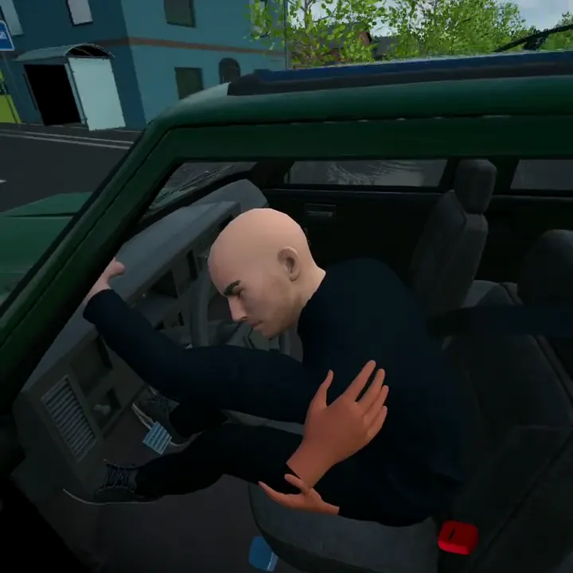
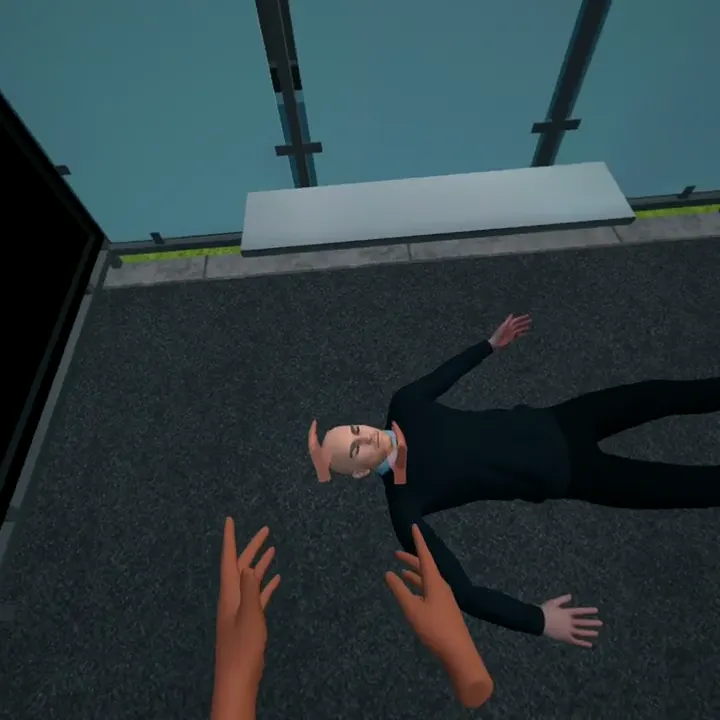
Four apps for doctors, patients and first-aid trainees. I was the only developer on each of them.
Medical accuracy is checked by the product managers and the client’s team, not by us developers. My job is to make the story work in a headset: what the user sees, what they do, and what happens when strangers at a booth pass the same headset along all day.
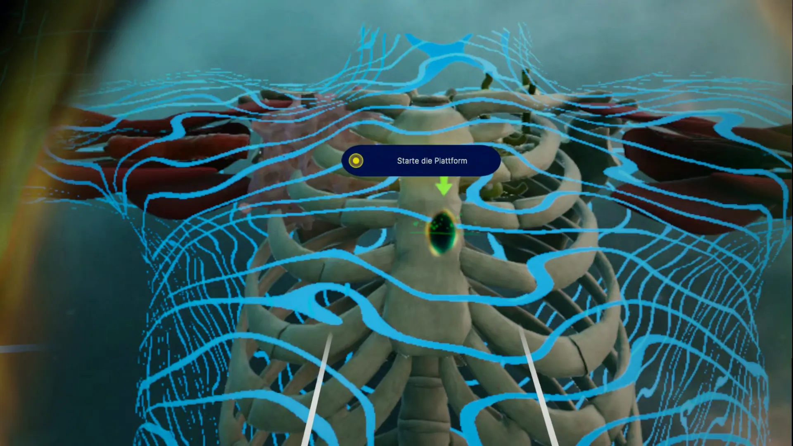
| App | Years | Team, and what it took |
|---|---|---|
| CAR-T cell therapy | 2023–2026 | Me alone, about 8 months in 2023. Rebuilt by me in 4 weeks in 2026, then about 2 weeks per new disease |
| Myasthenia gravis | 2024–2026 | The only developer in a team of five. The most time and effort I have put into one app |
| Amyloidosis | 2026 | Me, one 3D artist and a product manager. First build in 4 days, release in 3 weeks |
| First aid in traffic | 2022–2023 | Me alone in Unreal Engine 4, with an artist for the street and some cars. My first paid VR job |
This is the first project I started on, back in 2023. It explains CAR-T cell therapy for lupus to patients who are getting the therapy and to doctors, at a university hospital, as part of a wider patient campaign. I built it alone in about eight months, feedback rounds included, kept working on it into 2024, and the hospital used it. Nothing changed in 2025.
In February 2026 it had to move from the Meta SDK to XR Interaction Toolkit, and the client wanted two more diseases: polymyositis and systemic sclerosis. I tried migrating the old project first. It kept breaking every interaction, because almost nothing was compatible, and fixing them one at a time made no sense when I knew the content by heart. So I started a fresh project.
That rebuild took four weeks, because I was building the warehouse packages and the flow controller at the same time. This app is where the flow controller came from. After that, each new disease took about two weeks of building and two more of iteration and feedback.
Every disease runs through the same seven scenes. Four of them change: the intro, the cell gateway, the mechanism-of-action area with its healthy and unhealthy states and symptoms, and the closing foyer. New characters, new dialogue, new room assets and new animated content from the artists. The interactions stay the same. The two new diseases actually have one or two fewer, because they skip the barometer and the feedback form.
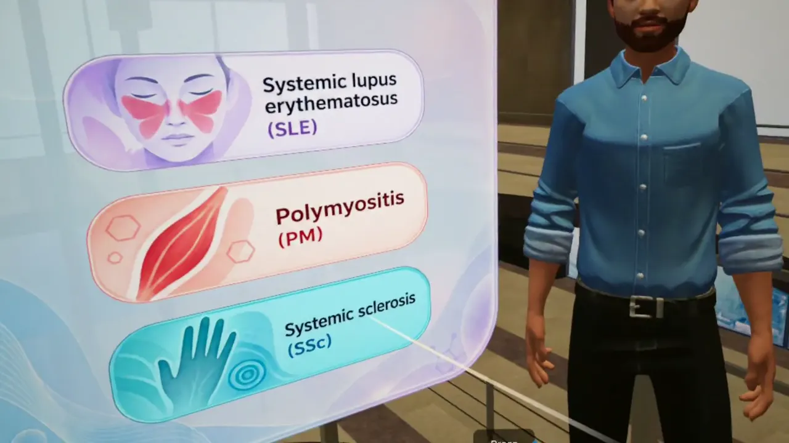
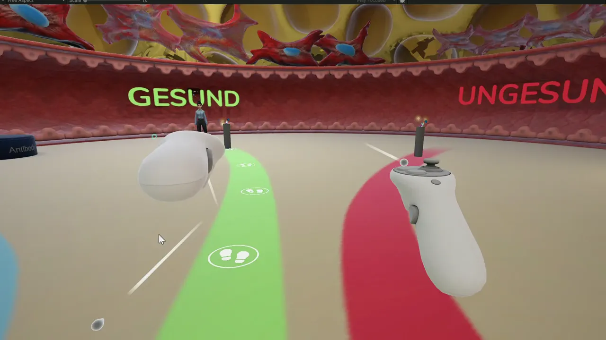
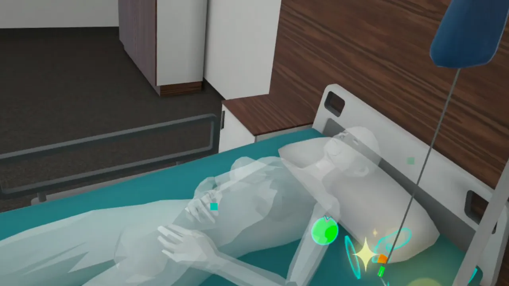
The obvious idea for a trip into the body is to shrink the player. We tried it, scaling the player and scaling the world, and got a lot of negative feedback both ways. So we went abstract. You pick up a suit and put it on, and when you look down you see the transparent suit on your own body. The doctor who guides you wears one too. Then you step through a portal into an abstract version of the inside of the body. In code the portal is just a visual and an async call that opens the next level.
The 2023 app used OVR LipSync, which only covers VR. The rebuild also had to run in the browser and on Android. Coding agents copied OVR LipSync’s approach: a .jslib plugin for WebGL and a custom component for Android, both producing the same visemes, which drive blendshapes on the character’s face.
From the dialogue sheet
OVR LipSync in VR, an agent-written .jslib in WebGL, a custom component on Android
The same mouth shapes on the face, on every platform
This one is shown to doctors at medical congresses. I started it in late 2024, before the warehouse existed, and I still maintain it in its original architecture. I was the only developer in a team of five, with a product manager, a technical manager, a designer and a 3D artist. It is the project I have put the most time and effort into.
You start as the patient. You wake up to your phone ringing and struggle to stand up and reach it. Meta’s body tracking shows you your own body, and the disease shows up in small ways, like one eye slightly blurred. Colleagues call about the work you missed. They try to be kind and still sound disappointed. You see yourself in a mirror. In your diary, thought bubbles each open a day when the disease made you suffer. Then your doctor calls, and you go into the body.
Inside the body you stand on a platform that flies along a spline path. It is guided locomotion, which is exactly the kind of movement that makes people sick in VR. We playtested it a lot, and changed it after each round.
We slowed the whole ride down
The edges of the view darken while moving
People choose how fast they go
A button folds the platform into a small pod with a small opening
Short trips through small portals. Very little travel, the same big view
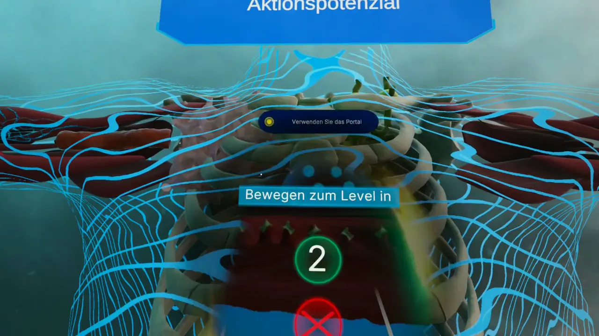
At first the stations were real stops along the path, each a moment, an action and another moment. Some were moments only: the platform slowed down by itself and held that speed while the narration played.
Then a tablet in your hand let you pick a station. Now you can start any station directly, and after each one a portal appears with menus on the left and right for choosing the next.
Every station is hand-built, with its own interactions and animations. This app is older than the warehouse, so adding one is still manual work.
The first full playthrough took 30 minutes. It is now about 20 at most, starting with an onboarding and going straight into the body. At one point the team wanted hand tracking only, so the menu needed something other than a gesture to open it. It is a smartwatch on your wrist now.
The UI was designed in Figma by our designer. I built it in Unity, by hand, without agents.
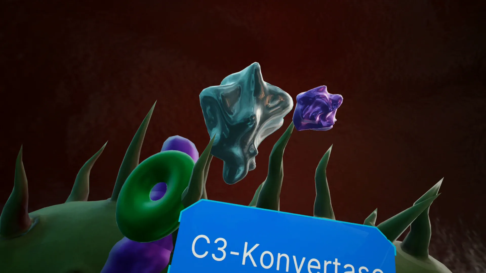
Development started in the first week of September 2026, and it had to be done quickly. I had a first build in four days and a release in three weeks. I was the only developer, with one 3D artist who made every model and a product manager. It ran at a medical congress booth for doctors: five to seven minutes per visitor, showing how the disease develops in a short, quick format, with no information about medicines.
It is one of the three apps shipped on the new warehouse since April. The flow graph and most interactions come from the warehouse. The hands and the grab are the Meta SDK’s defaults. I didn’t reinvent that wheel, because there wasn’t time.
A booth is a hard place for mixed reality. Every few minutes someone takes the headset off and hands it to the next person, and tracking broke when that happened. So the app ends inside a blood vessel in VR with a small floating restart button. The booth operator presses it for each new visitor. It recentres and resets tracking, and the new visitor starts in mixed reality with everything where it is supposed to be.
First-time users got stuck, so every step is guided by dialogue, audio and visual cues, and objects in the room light up when it is their turn. Whenever you have to grab or touch something, a ghost hand appears next to it and shows you how. And if nobody does anything for more than a minute, the flow moves on by itself.
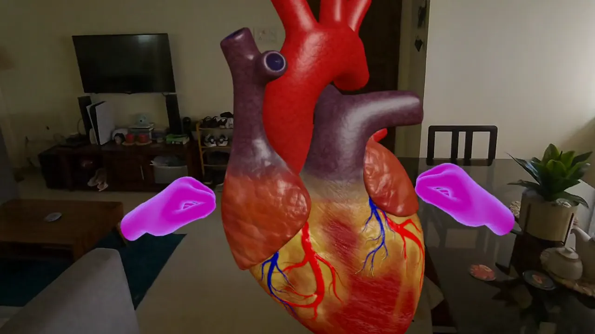
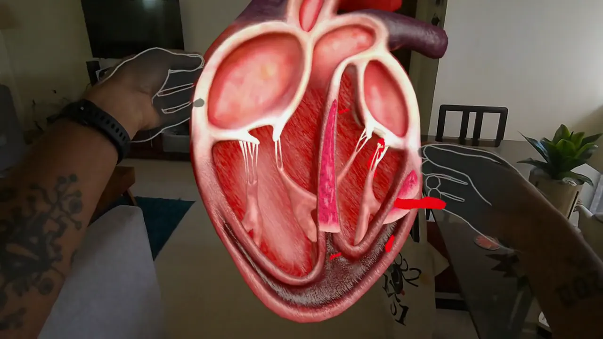
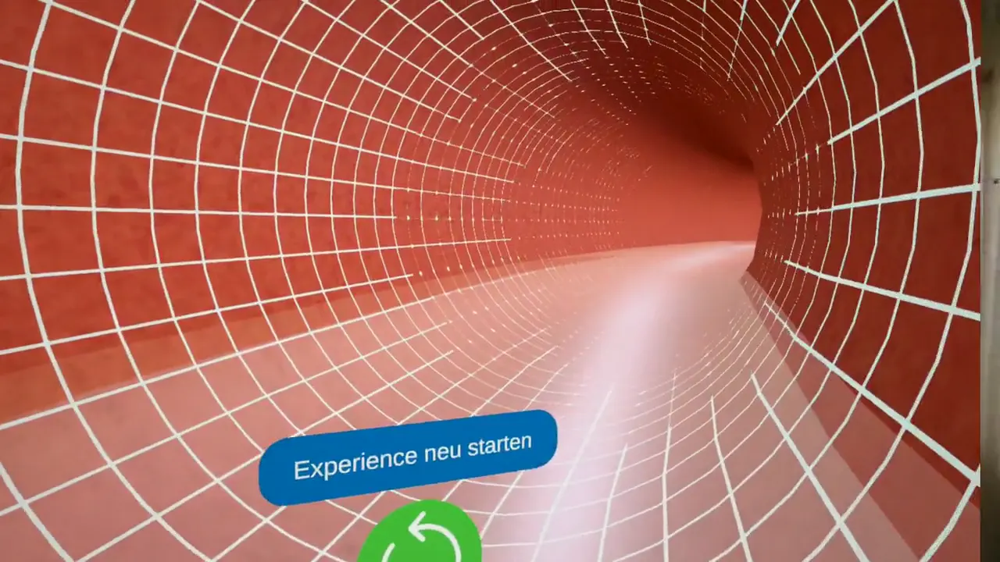
I didn’t hand-write the shaders, effects or most animations. I steered coding agents toward the look I wanted, checked the result in the headset, and steered again. Some things I did have to make by hand: the cloud of fibrils, the ghost hand animation, and placing the blood vessels so the shader reveal looked the way I meant it to.
The heart is two meshes, a whole heart with a cut heart as its child. One shader dissolves the whole heart away while the cut heart is revealed at the same moment, so it opens smoothly instead of popping.
For the grab, the Meta SDK hands attach to anchor points on the heart. The app counts how many anchors are in use to tell a one-hand grab from a two-hand grab. When one hand lets go, it checks whether the other anchor is still held. If it is, the heart stays in that hand. If not, the grab ends.
The fibrils were a cloud particle effect at first. The performance cost wasn’t worth what it looked like, so they became GPU mesh particles, which are much faster on the device, and the app holds 72 fps.
In the middle there is a small game, because the product manager wanted something to keep people engaged. Unhealthy cells come at you along two splines, and the fibrils in your hands destroy them. The destroyed cells collect around your hand as rings. No score, no way to fail. From the feedback we got, it worked well.
The voice-over comes from the warehouse dialogue sheet. We are now moving it to a local voice model, so it will cost nothing.
My first paid VR job, before I joined the agency. A 3D artist supplied the street and some of the cars. I made everything else, alone, in Unreal Blueprints: the NPCs from Mixamo characters, the CPR and other animations, and traffic that behaves like traffic. I used a lot of what I had learned building VETAL 26. It runs on Quest 2 through OpenXR, with controllers and free hand models.
To get the crash, I drove the cars myself in Unreal and recorded the drive as an animation. A board floating to your left shows the current step, and dialogue and highlighted objects tell you what to do next.
It was sold to Weltenmacher, a German VR training company, which uses it in its own training. Their page about it (opens in a new tab).
In an early version, if you got out of your car on the wrong side, a car spawned behind you and hit you. It was realistic, and it made the training too hard for some people, so we took it out.

